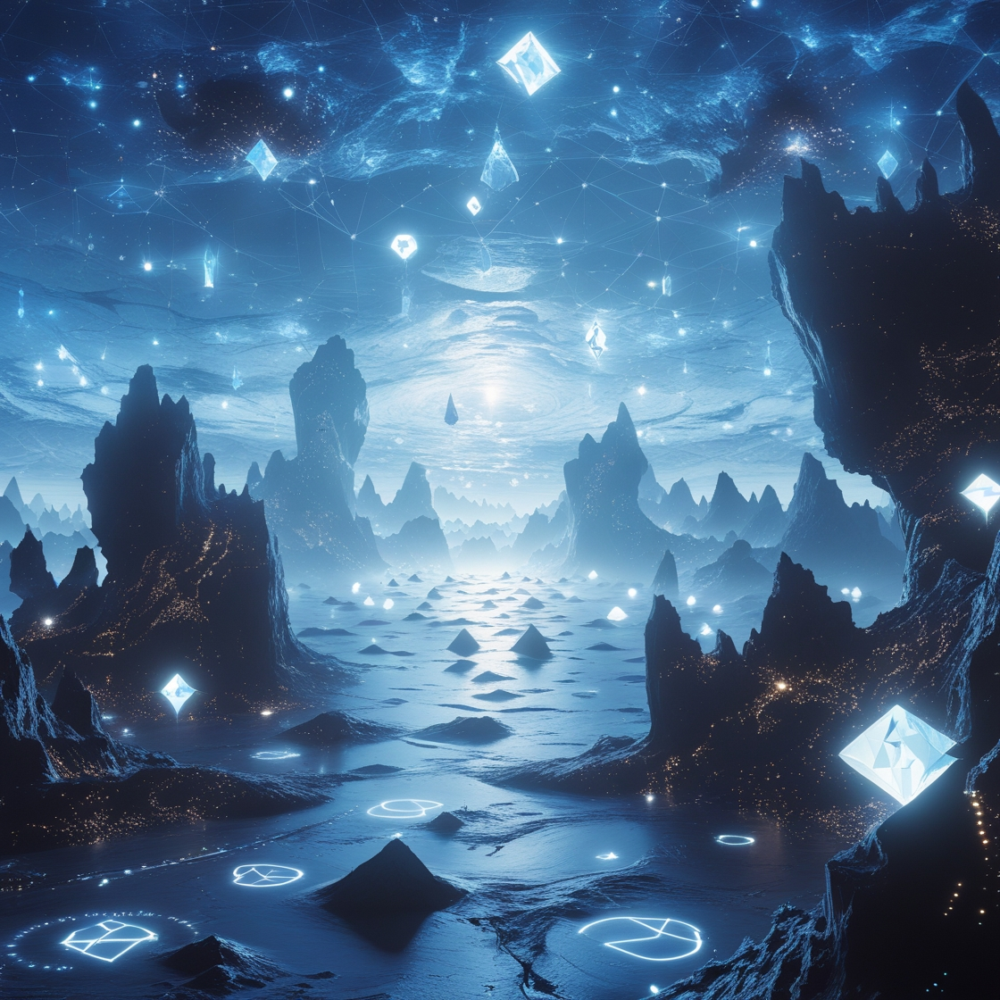

Силы и способности
Телекинез и потенциал
Телекинез астранитов — это прямое управление материей через энергию Субстрата,
позволяющее им манипулировать объектами от атомного уровня до планетарных масштабов.
Их сила растёт с возрастом: новички останавливают пули, мастера создают чёрные дыры,
а Творцы переписывают локальные законы физики. Однако каждое использование усиливает
кристаллизацию тела, делая мощь одновременно даром и проклятием.
Этапы развития астранитов
Неофит (0–50 лет)
Физические возможности:
- Сила - в 2–5 раз сильнее человеческой.
- Поднимает до 500 кг голыми руками
- Выносливость – в 2 раза выше человеческой.
- Выдерживает удар, эквивалентный танковому снаряду (не смертельно)
- Реакция – 0.05 сек (ловит стрелу в полёте).
- Регенерация – заживляет переломы за 1 день, порезы за минуты.
Интеллект:
- IQ ~250–300.
- Осваивает языки за неделю, базовые науки – за месяц.
- Память – помнит каждый день с рождения.
Телекинез:
- Поднимает до 100 кг с точностью ±5 см.
- Может останавливать пули, но не более 10 за раз.
Ментальная сила:
- Чувствует эмоции на расстоянии 10 м.
- Может оглушить слабое существо мысленным импульсом.
Ученик (50–200 лет)
Физические возможности:
- Сила - 10–20 тонн в базовом состоянии.
- Может согнуть стальную балку пальцами.
- Выдерживает падение с орбиты (телекинез смягчает удар).
- Выносливость – не устаёт неделями.
- Скорость – бегает до 200 км/ч.
- Регенерация – восстанавливает органы за час (кроме мозга).
Интеллект:
- IQ ~400–500.
- Понимает квантовую физику на интуитивном уровне.
- Может предсказывать события на 1–2 дня вперёд (на основе расчётов).
Телекинез:
- Контролирует до 1 тонны с точностью до 1 мм.
- Создаёт телекинетические щиты (выдерживают танковый выстрел).
Ментальная сила:
- Читает поверхностные мысли.
- Может внушать простые команды («замри», «беги»).
Воин (200–500 лет)
Физические возможности:
- Сила – поднимает 50-100 тонн голыми руками.
- Ломает адамантиевые конструкции.
- Скорость – Мах 1 (звуковой барьер).
- Регенерация – выживает без сердца 5 минут (телекинез заменяет функции).
Интеллект:
- IQ ~700–900.
- Решает задачи мультиверсного масштаба (например, расчёт кротовых нор).
- Видит 4-е измерение (может обходить стены через Субстрат).
Телекинез:
- Управляет 100 тоннами с точностью до микрона.
- Разбирает сложные материалы (титан, нейтронную звезду).
Ментальная сила:
- Телепатическая сеть – связь с другими астранитами на планетарном уровне.
- Может стирать 5-минутные воспоминания у слабых существ.
Мастер (500–1000 лет)
Физические возможности:
- Сила - 1000+ тонн.
- Поднимает небольшие здания.
- Сжимает алмаз в порошок ладонью.
- Неуязвимость – выдерживает ядерный взрыв в эпицентре.
- Скорость – Мах 5 (плазма вокруг не обжигает).
- Регенерация – восстанавливается из капли крови (но медленно).
Интеллект:
- IQ ~1200–1500.
- Мыслит 11-мерными категориями.
- Предсказывает вероятные будущие на 10 лет вперёд.
Телекинез:
- Контролирует 10 000 тонн с атомарной точностью.
- Создаёт чёрные дыры диаметром 1 м.
Ментальная сила:
- Зомбирование – подчиняет целые города.
- Видит сны других существ.
Творец (1000+ лет)
Физические возможности:
- Сила: Неизмерима.
- Может передвигать горы чистой мускулатурой.
-Выдерживает падение в нейтронную звезду (кратковременно).
-Отключает инерцию у своих ударов.
-Увеличивает массу кулака до планетарной.
- Псевдобожественность – не стареет, не нуждается в пище/воздухе.
- Скорость – сверхсветовая в Субстрате.
- Регенерация – бессмертен (если не уничтожить ядро Субстрата в теле).
Интеллект:
- IQ ~∞ (мыслит вне времени).
- Понимает язык вселенной (видит «код» реальности).
Телекинез:
- Без лимитов – может двигать планеты.
- Переписывает законы физики локально (например, отключает инерцию).
Ментальная сила:
- Коллективное сознание – управляет разумом расы.
- Стирает целые эпохи из памяти цивилизаций.
Критические пороги развития:
1. 50 лет – первый контакт с глубинным Субстратом (риск безумия +20%).
2. 200 лет – осознание многомерности (некоторые сходят с ума).
3. 500 лет – слияние с Субстратом (10% гибнут, превращаясь в кристаллы).
4. 1000 лет – становление Творцом (либо просветление, либо потеря личности).
(Примечание: все показатели — без активации телекинеза, только мускулатура/кости.)
Главный секрет:
Астраниты не умирают от старости – они либо эволюционируют, либо растворяются в
Субстрате, становясь частью его «разума».
Взаимодействие астранитов с Субстратом
Общий принцип:
Субстрат для астранитов — это параллельное измерение, где материя и энергия существуют в виде «сырой» информации.
Они могут:
- Манипулировать его энергией (усиливать атаки, лечиться).
- Перемещаться через него (телепортация, уклонение).
- Изгонять врагов в него (как в бесконечную тюрьму).

Как астраниты отправляют атаки и врагов в Субстрат?
«Разрыв реальности» (атака)
Как работает:
1. Астранит фокусирует телекинез в точку перед собой.
2. Пространство трескается, открывая портал в Субстрат.
3. Всё, что попадает в зону, растворяется в энергетическом океане.
Как выглядит:
- Воздух мерцает, как горячий асфальт, затем разрывается в чёрную дыру с синим свечением.
- Предметы и люди растягиваются в нити света и исчезают.
Предел:
- Можно отправить до 100 тонн за раз (для Творца — нет лимита).
- Живые существа сопротивляются (чем сильнее воля, тем дольше «держатся»).
«Изгнание» (точечный перевод врага)
Как работает:
- Астранит касается цели (или её тени).
- Тело врага дезинтегрирует в чёрный туман, который втягивается в Субстрат.
Как выглядит:
- Жертва кричит без звука, её плоть испаряется слой за слоем.
- Остаётся только пепельный след на земле.
Предел:
- Не работает на бестелесных или божественных существ.
- Если жертва сильнее астранита, может вырваться.
Как астраниты сами переходят в Субстрат?
Полный переход (телепортация/побег)
Как работает:
- Тело теряет плотность, становясь полупрозрачным.
- За 1-2 секунды превращается в светящийся силуэт и исчезает.
Как выглядит:
- Со стороны кажется, что астранит тает в воздухе, оставляя мерцающий след.
Предел:
- Можно не чаще 1 раза в час (иначе риск «застрять»).
- В Субстрате можно оставаться до 10 минут (дольше — тело начнёт распадаться).
Частичный переход (уклонение)
Как работает:
- В момент удара 95% тела уходит в Субстрат, затем возвращается.
Как выглядит:
- Астранит мигает, как голограмма, а атака проходит сквозь него.
Предел:
- Не блокирует магию, влияющую на душу/разум.
Как выглядит Субстрат «изнутри»?
Для астранитов это:
- Бесконечный океан сине-белой энергии.
- Острова — это «сгустки» информации (например, память убитых врагов).
- Небо — чёрное, с пульсирующими звёздами (на самом деле — порталами в другие миры).
Для посторонних, попавших туда:
- Нет привычной физики — нельзя дышать, стоять, видеть.
- Давление информации вызывает галлюцинации (жертвам кажется, что они падают вечно).
Кого нельзя изгнать?
- Существ из Субстрата.
- Обладателей «Абсолютной защиты» (например, богов с неуязвимостью).
- Тем, кто сильнее астранита (можно затормозить процесс, но не остановить).
Последствия злоупотребления
Для астранита:
- Если слишком часто нырять в Субстрат, можно потерять связь с материальным миром.
- Крайний случай — превращение в блуждающий дух (как призрак корабля).
Для жертв:
- Те, кто выжил, возвращаются безумными (видели «слишком много»).
- Их тела частично кристаллизуются (как у астранитов, но без контроля).
Телепатическая сеть через Субстрат
Базовый уровень (все астраниты):
- Чувствуют эмоции и экстренные сигналы сородичей в радиусе планеты (если те не блокируют связь).
- Пример: Раненый астранит подсознательно "кричит" в Субстрат, и другие ощущают его боль.
Продвинутый уровень (Мастера и Творцы):
- Могут передавать точные мысли, образы и даже навыки на межзвёздные расстояния.
- Для этого создают "квантовые мосты" — каналы в Субстрате, устойчивые к помехам.
Обмен знаниями
Как передаётся информация:
- Через сжатые пакеты данных в виде рунических символов (усваиваются за секунды).
- Например, воин может «переслать» память о тактике боя, но получатель испытает её как собственный опыт (возможен временный диссонанс).
Ограничения:
- Объём: Новички не могут принять больше 1 часа чужих воспоминаний без перегрузки.
- Точность: Часть данных искажается Субстратом (особенно если передающий волнуется).
- Защита: Творцы шифруют знания, чтобы их не перехватили враждебные расы.
Риски и запреты
"Шум Субстрата":
- В зонах, где реальность повреждена (например, после войн), связь прерывается или приходят чужие голоса (возможно, из параллельных миров).
Этический кодекс:
- Запрещено насильственное чтение мыслей (это карается кристаллизацией).
- Дети учатся блокировать свой разум, чтобы избежать случайного «психозахлёста» от эмоций взрослых.
Примеры использования
Боевая координация:
- Отряд астранитов действует как единый организм, предугадывая действия друг друга.
Обучение:
- Учитель передаёт ученику мгновенный доступ к языку или науке, но тот должен "переварить" знания за дни/месяцы.
Чрезвычайные ситуации:
- Если астранит застрял в другом измерении, он может послать SOS-сигнал через Субстрат.
Защита разума астранитов
Уровни ментальной защиты:
Базовый (0–50 лет)
Естественный иммунитет:
- Блокирует грубые попытки чтения мыслей (например, от начинающих телепатов).
- Автоматически фильтрует чужие эмоции.
Слабые места:
- Уязвимы к массовым пси-атакам (5+ телепатов одновременно).
- Можно обмануть сложными иллюзиями.
Продвинутый (50–200 лет)
Активная оборона:
- Телепатические «крюки»: Если кто-то попытается проникнуть в разум — получит обратный удар (мигрень, временная слепота).
- Кристаллические нейрофильтры: Преобразуют чужие мысли в белый шум.
Ограничения:
- Защита падает при физических травмах.
- Не спасает от богов/демонов.
Мастерский (500+ лет)
Абсолютные техники:
- Квантовое шифрование: Мысли разбиваются на частицы и хранятся в Субстрате.
- Ментальные мимикрии: Подменяют сознание фальшивыми потоками (атакующий видит то, что хочет астранит).
- Субстратный огонь: Сжигает пси-атаки до контакта с разумом.
Недостатки:
- Тратит 6% энергии в час на поддержку.
- Если астранит умирает — его зашифрованные мысли теряются навсегда.
Защита от конкретных угроз
Иллюзии
Методы противодействия:
- Анализ Субстрата: Настоящие объекты оставляют «след» в измерении, иллюзии — нет.
- Перекрёстная проверка: Сравнивают данные от 5+ органов чувств (если что-то не сходится — это обман).
Пример: Иллюзорный дракон не имеет тепла → астранит игнорирует его.
Чтение мыслей
Контрмеры:
- Ложные воспоминания: Сознание подсовывает навязчивую мелодию/уравнение вместо реальных мыслей.
- Пси-вирусы: Если телепат копнёт глубже — заразится кошмарами из Субстрата.
Предел: Даже боги не могут прочесть зашифрованные мысли Творца.
Подчинение/внушение
Защитные механизмы:
- Рефлекторное отражение: Чужой приказ автоматически переворачивается (например, «Убей себя» → «Убей того, кто приказал»).
- Двойное сознание: Внешний слой подчиняется, внутренний — остаётся свободным.
Прямое ментальное нападение
Ответные меры:
- Обратная телепортация: Атакующий переносится в Субстрат (где его разум растворяется).
- Энергетический вампиризм: Крадёт силу из атаки, усиливая себя.
Последствия провала защиты
- Временное безумие (если атака была жёсткой).
- Утечка памяти (враги узнают секреты).
- Субстратное заражение (разум «протекает» в другое измерение).
Эволюция телекинетической защиты у астранитов
Уровни телекинетической защиты
Новичок (0–50 лет)
Тип защиты: Рефлекторные локальные щиты (только в момент удара).
Параметры:
- Поглощает до 10 тонн/см².
- Задержка реакции: 0.2 сек.
Уязвимость: Пропускает 3-й удар в серии.
Пример: При атаке вильтрумита — ломаются рёбра, но выживает.
Воин (50–200 лет)
Тип защиты: Автоматизированные силовые поля вокруг тела.
Улучшения:
- Поглощает 100 тонн/см².
Реакция: 0.01 сек (парирует пули).
Адаптация: Подстраивается под тип атаки (кинетика/энергия).
Пример: Выдерживает удар молота весом 50 тонн, но отлетает на 10 м.
Мастер (200–500 лет)
Тип защиты: Многослойная матрица (физическая + энергетическая + ментальная).
Фишки:
- Динамическая перестройка: Щит уплотняется в точке удара.
- Контр-импульсы: Возвращает 35% урона атакующему.
- Самовосстановление: Микротелекинез чинит трещины в реальном времени.
Творец (500+ лет)
Тип защиты: "Абсолютный кокон" (искажает пространство вокруг тела).
Бонусы:
- Неуязвимость к любой атаке ниже звёздного уровня (выдерживает падение астероида).
- Активная мимикрия: Подстраивается под новые виды угроз за 0.001 сек.
- Энергонезависимость: Питается от Субстрата, почти не тратит силы.
- Пример: Может стоять в эпицентре сверхновой 1–2 секунды без вреда.
Гибкость защиты высокоуровневых астранитов
Сценарии адаптации:
Против сверхскоростных атак (вильтрумиты):
- Щит предугадывает траекторию через анализ кинетики.
- Включает "вязкие поля", замедляющие удары в 1000 раз.
Против магии/энергооружия:
- Автоматически генерирует анти-резонансные частоты.
- Перенаправляет энергию в кристаллы-накопители.
Против квантовых угроз:
- Создает локальные временные петли, "отменяющие" часть урона.
Слабости даже у мастеров
- Анти-Субстратные поля: разрывают их связь с измерением.
- Информационные вирусы: Заклинания, корруптирующие телекинетические алгоритмы.
- Сверхконцентрация атак: 100+ ударов в одну точку за наносекунду.
Психическая перегрузка
- Поддержка "абсолютного кокона" требует фокуса.
Если астранит:
- Паникует → щит теряет 50% эффективности.
- Увлёкся атакой → забывает укрепить спину.
Поглощение энергии
Энергетические атаки (Плазма, лазеры, молнии, магические лучи)
Как поглощают:
- Создают телекинетические щиты, рассеивающие энергию в Субстрат.
- Мастера могут перенаправить энергию в кристаллы-накопители для последующего использования.
Примеры:
- Выстрел бластера → энергия «стекает» по невидимым каналам в воздухе.
- Молния → поглощается и преобразуется в свечение глаз.
Ограничения:
- Атаки звёздного масштаба (например, удар сверхновой) перегружают щиты.
- Тёмная энергия (как у ситхов) может «разъедать» защиту.
Кинетические атаки
(Пули, взрывы, удары, метеориты)
Как поглощают:
- Останавливают объекты в воздухе, атомарно разбирая их на лету.
- Воин может «поймать» танковый снаряд и бросить его обратно.
Примеры:
- Пуля → зависает в 1 см от кожи, затем рассыпается в пыль.
- Удар светового меча → лезвие не может коснуться кожи (телекинез создаёт невидимый зазор).
Ограничения:
- Сверхскоростные атаки (например, гиперзвуковые снаряды) сложнее блокировать.
- Гравитационное оружие (искривление пространства) требует концентрации.
Ментальные/пси-атаки
(Телепатия, иллюзии, контроль разума)
Как поглощают:
- Квантовое шифрование разума автоматически фильтрует вторжения.
- Чужое воздействие «отражается» как обратная волна (атакующий получает урон).
Примеры:
- Попытка джедая «почувствовать» астранита → он видит лишь пустоту или рунические символы.
- Атака ситха на разум → ситх слышит **голос Субстрата** и теряет сознание.
Ограничения:
- Древние сущности (например, Абелот из Legends) могут прорвать защиту.
Пространственно-временные искажения
(Порталы, червоточины, остановка времени)
Как поглощают:
- Стабилизируют локальную реальность за счёт Субстрата.
- Если время замедлено, астранит ускоряет себя телекинезом.
Примеры:
- Попытка заморозить астранита во времени → он фазово смещается в Субстрат.
- Червоточина → астранит «закрывает» её, как дверь.
Ограничения:
- Абсолютные артефакты игнорируют их контроль.
Абстрактные/концептуальные атаки
(Стирание из реальности, проклятия, «удаление» цвета/звука)
Как поглощают:
- Переписывают повреждённые участки реальности через Субстрат.
- Например, если «красный цвет» уничтожен, астранит воссоздаёт его из памяти.
Примеры:
- Проклятие смерти → перехватывается и перенаправляется на случайный объект.
- Исчезновение звука → астранит генерирует новые звуковые волны.
Ограничения:
- Божественные заклинания требуют огромных затрат энергии.
Что НЕ могут поглотить?
- Анти-Субстратные поля – отключают их силы (как криптонит).
- Атаки изнутри Субстрата – например, удары астральных хищников.
- Сверхконцентрированные атаки – 100+ ударов в одну точку за наносекунду.
- Собственные кристаллы – если враг использует их пепел/кровь как оружие.
Полёт астранитов
Базовый механизм:
Астраниты не летают в классическом понимании — они отключают гравитацию для себя и
создают искусственные векторы движения через телекинез.
Как это работает:
1. «Аннулирование веса» – их тело перестаёт подчиняться гравитации (но не инерции).
2. Телекинетические «ступени» – астранит отталкивается от:
- Собственного силового поля (невидимые платформы).
- Молекул воздуха (разгоняя их до плазменного состояния для резких манёвров).
3. Коррекция Субстратом – если астранит теряет концентрацию, Субстрат автоматически стабилизирует его траекторию.
Особенности и ограничения
Неофит - 500-800 км/ч - < 1% скорости света - Субстрат недоступен
Ученик - Мах 5 (~6,000 км/ч)- 10% световой - 100× световой (короткие прыжки)
Воин - Мах 20 (~24,600 км/ч) - 50% световой - 500× световой
Мастер - Мах 50 (~61,500 км/ч) - 80% световой - 1,000× световой
Творец - Сверхсвет (локально*) - 99% световой - 10,000× световой
Движение бесшумное, без турбулентности (как скольжение по льду).
ак это выглядит со стороны?
Обычный полёт:
- Астранит скользит по воздуху, словно его тянет невидимая нить. Нет разгона или рывков – движение начинается и останавливается мгновенно.
- На высокой скорости тело слегка мерцает (из-за микровоздействия на фотоны).
Экстремальные манёвры:
- Резкий разворот: Воздух вокруг взрывается плазмой (астранит «давит» на молекулы, как на твёрдую стену).
- Экстренная остановка: Появляется квантовая волна (визуально – искривление пространства перед телом).
Главная слабость
Если астранит теряет сознание – падает как камень (телекинез отключается). Поэтому в бою они:
- Никогда не зависают на месте дольше 2 секунд.
- Всегда держат 10% силы на автопилот от Субстрата.
Пример:
Чтобы догнать врага, астранит:
1. Убирает сопротивление воздуха для себя.
2. Сжимает пространство перед собой (укорочение дистанции).
3. Отталкивается от гравитационного поля планеты.
Результат – мгновенный рывок без звуковой волны или перегрузки.
Телекинетический обзор 360° у астранитов
Как это работает?
Принцип "Радарного Телекинеза"
- Астраниты сканируют пространство вокруг, создавая силовое поле-сетку.
- Любое взаимодействие с сеткой (движение воздуха, вибрации) мгновенно передаётся в их сознание.
- Аналог: Человеческая кожа, но с в 1000 раз большей чувствительностью.
Диапазон охвата
Неофит - Радиус 5 м - Различает объекты >10 см (Видит атаку сзади, но не иглу).
Воин - Радиус 5 м - Различает объекты >1мм (Чувствует пули на подлёте).
Мастер - Радиус 5 м - Видит молекулярные вибрации (Обнаруживает невидимок ).
Творец - Радиус 5 м - Квантовая точность ("Видит" сквозь время и измерения).
Преимущества 360°-обзора:
В ближнем бою
- Автоматические блоки: Тело реагирует без участия сознания на атаки со спины.
- Контроль слепых зон: Невозможно зайти сбоку/сзади незамеченным.
В стратегии
Одновременный анализ:
- 100+ целей в радиусе действия.
- Прогнозирование траекторий (где будет враг через 1 сек).
Против скрытности
Обнаруживает:
- Невидимок (по вибрациям в воздухе).
- Телепортов (по остаточным колебаниям пространства).
- Иллюзии (по несовершенству пси-волн).
Ограничения системы
Энергозатраты:
Пассивный (5м) - 0.1%/мин.
Боевой (50м) - 1%/мин.
"Абсолютный" (500+ м) - 3%/сек.
Методы обмана
Абсолютная невидимость:
- Не взаимодействует ни с чем (даже воздухом).
Сверхсветовые атаки:
- Телекинетический радар не успевает среагировать.
Когнитивная нагрузка:
- Новички не выдерживают поток данных → головная боль, тошнота.
- Решение: фильтры (игнорировать фоновые сигналы: ветер, дождь).
Эволюция обзора с опытом
Мастера создают телекинетические сенсоры:
- В воздухе (плавающие "зрачки").
- На поверхностях ("липкие" датчики).
Видение через время
- Творцы видят атаки за 0.5 - 1 сек до их нанесения (анализ вероятностей).
Межпространственный мониторинг
- Обнаруживают угрозы из параллельных реальностей.
Способы маскировки и скрытного перемещения астранитов
Телекинетическая невидимость
Как работает?
- Искажение света: Телекинезом создаётся "плащ" из преломлённых фотонов вокруг тела.
- Подавление звуков/запахов: Микровибрации воздуха блокируются силовым полем.
- Тепловая маскировка: Поглощение ИК-излучения собственного тела.
Энергозатраты: 2-5% от общего запаса в час.
Ограничения:
Эффективен против: людей, базовых сканеров, животных
Бесполезен против:
- Богов/демонов с "истинным зрением"
- Квантовых детекторов
- Существ из Субстрата
Фазовый сдвиг в Субстрат
Механизм:
Тело переводится в "квантово-неопределённое" состояние.
90% массы уходит в Астральный Субстрат.
В реальности остаётся лишь слабый проекционный след.
Особенности:
- Можно чувствовать происходящее в материальном мире:
- Видеть/слышать через "разрыв" между измерениями
- Телекинетически взаимодействовать (но с -70% эффективности)
- Не обнаруживается обычными средствами
Риски:
- При длительности >10 мин возможен неконтролируемый распад
- Сильные маги могут "выдернуть" обратно
Иллюзорная мимикрия
Варианты:
- Визуальный камуфляж: Принимает облик других существ/объектов
- Аура-маскировка: Подавляет характерное пси-излучение астранитов
- Ментальный фон: Встраивает себя в "фон" сознания наблюдателей
Пример использования:
Может выглядеть как:
- Обычный человек в толпе
- Дерево/камень в лесу
- "Пустое место" в подсознании смотрящего
Квантовая телепортационная маскировка
Принцип:
Тело дробится на квантовые частицы
Частицы распределяются по пространству
В любой момент может материализоваться в нужной точке
Эффект:
- Физически отсутствует в реальности
- Может наблюдать из любого места своего "рассеяния"
- Полная неуязвимость к атакам
Как можно обнаружить замаскированного астранита?
Эффективные методы:
Субстратные резонаторы
- Улавливают "дрожание" реальности в местах фазового перехода
Квантовые детекторы
- Фиксируют аномалии в вакуумных флуктуациях
Пси-вирусы
- Заражают систему маскировки, вызывая сбои
Иллюзии астранитов: искажение реальности на квантовом уровне
Астраниты не просто создают "картинки" – они переписывают восприятие реальности, используя Субстрат как холст. Это делает их иллюзии абсолютными для большинства рас.
Масштабы воздействия
Индивидуальные иллюзии:
- Жертва: Один человек или группа.
Эффект:
- Полная подмена органов чувств (зрение, слух, тактильные ощущения).
- Пример: Заставить врага видеть союзников как монстров, вызывая панику.
Полевые иллюзии
Радиус: До 10 км для Мастера, планетарный для Творца.
Эффект:
- Имитация катастроф (падение астероида, взрыв звезды).
- Создание ложных ландшафтов (город кажется океаном).
Абсолютные иллюзии (только Творцы):
- Изменяют реальность для всех свидетелей, включая приборы.
- Пример: Превратить пустыню в цветущий лес – даже растения будут пахнуть.
Механизм работы
Источник силы:
- Субстрат – астранит "вплетает" ложные данные в информационное поле реальности.
Техники создания
"Мимолетный обман" (бытовые иллюзии):
- Короткие, требует минимальной энергии.
- Пример: Скрыть рану или изменить внешность.
"Глубинный гипноз" (долговременное воздействие):
- Встраивает иллюзии в память жертвы.
- Пример: Заставить человека "помнить", будто он всю жизнь был рабом.
"Кошмар Субстрата" (оружие):
- Жертва застревает в персональном аду (например, бесконечно падает).
Ограничения
Кто может сопротивляться?
Существа из Субстрата – видят "изнанку" иллюзий.
Другие астраниты – но даже они 5-10 секунд анализируют обман.
Интересные факты
- "Иллюзорные тени" – некоторые астраниты настолько увлекаются обманом, что забывают, каковы на самом деле.
- Искусство: Их "живопись" – это законсервированные иллюзии в кристаллах (можно "войти" в картину).
Ментальное подчинение и контроль у астранитов
Прямая телепатическая инъекция
Процесс:
- Астранит устанавливает физический или зрительный контакт
- Через Субстрат внедряет в сознание жертвы "мысленные крюки"
- Формирует нейронные связи, подменяющие волю
Ограничения:
- Требует 3-10 секунд непрерывного контакта
- Эффективен только против рас со схожей нейроструктурой
Субстратное программирование
Создание "ментальных вирусов" в Субстрате, которые:
- Подменяют воспоминания
- Встраивают ложные убеждения
- Формируют искусственную лояльность
- Пример: Жертва "вспоминает", что всегда служила астраниту
Квантовое зомбирование (только Творцы)
- Частичное перемещение сознания жертвы в Субстрат
- Оставшееся в теле "я" становится послушной оболочкой
Тактические применения
Боевое подавление:
- Одновременное отключение 10-15 солдат противника
- "Каскадный эффект" – заражённые начинают заражать других
Долгосрочная инфильтрация:
- Астранит-шпион 20 лет выдавал себя за генерала людей
- Подмена ключевых решений без явного контроля
Массовые иллюзии:
- Городу 3 месяца казалось, что их солнце взорвалось
- Население эвакуировалось без реальной угрозы
Побочные эффекты
Для жертвы:
- После снятия контроля – 83% случаев амнезии
- 15% – необратимые изменения личности
- 2% – спонтанная кристаллизация мозга
Для астранита:
- Накопление "ментального шума" (голоса жертв)
- Риск "обратного заражения" (перенимание черт подчинённых)
- Ускоренная кристаллизация доминирующей руки
Этические ограничения
Хартия Никсара запрещает:
- Подчинение других астранитов
- Создание "ментальных рабов"
- Вмешательство в эволюцию рас
- Нарушители караются кристаллизацией
(Примечание: Рука Никсара систематически нарушает эти запреты, используя "серые"
техники ментального влияния.)
«Ни'Шарр» (Другое название: «Сфера Разлома»
Значение: Несёт в себе огромный культурный и трагический груз. Это постоянное напоминание о потере Никсара и о том, к какой катастрофе может привести потеря контроля над силой. Для астранита произнести это название — всё равно что поклясться на могилах предков. Это слово используют с уважением и смирением.
Базовый принцип
Астранит фокусирует телекинетическую энергию и сжимает вокруг неё пространство в точке на своей ладони, создавая нестабильный сгусток мощности. Эта энергия удерживается сверхплотной силовой оболочкой, также созданной телекинезом. Визуально это выглядит как идеально чёрная сфера, окружённая сияющим, искрящимся ореолом, которая искажает свет и пространство вокруг себя, «засасывая» взгляд. В воздухе слышен низкий, вибрирующий гул.
Механика активации: При контакте с целью или по мысленной команде оболочка коллапсирует, высвобождая всю сконцентрированную энергию в одном катастрофическом импульсе, направленном внутрь или наружу.
Вариации и модификации техники
Эта техника — как чистый холст. Её свойства определяются тремя параметрами, которыми астранит управляет мысленно:
Сила сжатия (потенциальная энергия внутри).
Плотность оболочки (время и способ высвобождения).
Вектор приложения силы (направление и характер воздействия).
Вариация: «Импульсный Разрыв» (Стандартное применение)
Параметры: Максимальное сжатие + хрупкая оболочка.
Эффект: При контакте вся энергия высвобождается мгновенно, создавая эффект «внутреннего взрыва». Цель не отбрасывается, а разрывается изнутри. Идеально против бронированных целей, щитов и укреплений.
Визуал: Яркая вспышка, после которой цель будто бы «взрывается» из своей центральной точки. Звук — резкий, сухой хлопок, переходящий в звон.
Вариация: «Кинетический Таран» (Отталкивающая сила)
Параметры: Умеренное сжатие + упругая оболочка.
Эффект: При активации сила не разрывает цель, а преобразуется в чистейший кинетический импульс, отбрасывающий всё на своём пути. Используется для:
Сброса противника с орбиты или в пропасть.
Создания дистанции.
«Расчистки поля» от лёгких целей.
Визуал: Сфера на мгновение становится молочно-белой, затем испускает мощную, почти невидимую ударную волну, которая не разрушает, а сминает и отбрасывает.
Вариация: «Роевая Граната» (Площадное поражение)
Параметры: Чрезмерное сжатие + толстая, но неоднородная оболочка.
Эффект: Астранит не бьёт сферой, а забрасывает её в гущу врагов или в центр помещения. Оболочка не выдерживает перегрузки и разрушается неравномерно, вызывая неконтролируемый выброс энергии. Результат — мощный взрыв, разбрасывающий телекинетические осколки (сгустки чистой силы), которые сами по себе режут и калечат.
Визуал: Сфера летит, оставляя за собой вихревой след, и разрывается как граната, испуская снопы искрящихся «игл» энергии.
Вариация: «Копьё Реальности» (Сфокусированный луч)
Параметры: Максимальное сжатие + оболочка, открытая с одного конца.
Эффект: Вместо взрыва, астранит формирует из сферы стабильный луч/линзу истребительной мощи. Высвобождаемая энергия не взрывается, а устремляется в одном направлении, испепеляя всё на своём пути на огромной дистанции. Чем дольше удерживается, тем больше энергии расходуется.
Визуал: Из сферы вырывается тонкий, идеально прямой луч света, окружённый спиралями искривлённого пространства. Звук — высокочастотный, пронзительный вой.
Вариация: «Вихревая Пропасть» (Режущий/дробящий эффект)
Параметры: Сильное сжатие + вращающаяся оболочка.
Эффект: Астранит перед сжатием «закручивает» энергию. При высвобождении сила не просто взрывается, а высверливает цель, нанося урон одновременно кинетический, термический и телекинетический. Создает чудовищные рваные раны или прорезает многослойные перекрытия.
Визуал: Сфера не просто светится, а быстро вращается, а при активации взрывается не сферически, а формирует кратковременный, бушующий вихрь из силовой энергии.
Тактическое применение и комбинации
«Тихий Разрыв»: Мастер может создать микро-«Сферу Разлома» прямо внутри тела противника (например, сжав воздух в его лёгких или кровь в сердце), добиваясь эффекта внутреннего взрыва без внешних проявлений.
«Телепорт-доставка»: Творец может создать сферу и телепортировать её («Разрыв реальности») прямо в центр вражеского флота или укрепления.
«Энергетический вампиризм»: Можно наполнить сферу не своей силой, а поглощённой энергией вражеских атак (плазма, лазеры), чтобы потом вернуть её отправителю в умноженном виде.
«Сфера-ловушка»: Можно оставить сферу с отсроченной активацией в качестве мины.
«Контролируемый коллапс»: Вместо взрыва можно медленно «стравливать» энергию, создавая область постоянного телекинетического давления, которая замедляет или дробит всё внутри.
Слабость техники: Требует доли секунды концентрации. В это время астранит уязвим. Опытные враги могут попытаться атаковать именно руку, удерживающую сферу, что может привести к её преждевременной детонации и травме самого астранита.
Как усиливают технику Мастера и Творцы?
Они выходят за рамки базовых вариаций, меняя саму природу техники.
У Мастеров:
Множественность: Создание роя из десятков микро-сфер, которыми можно управлять независимо, как умными боеголовками. Они окружают противника и взрываются одновременно с разных сторон.
Дистанционное создание: Формирование сферы не в руке, а прямо рядом с целью, минуя этап броска.
Гибридизация: Наполнение сферы другими видами энергии — например, украденным теплом звезды или кинетической энергией падающего астероида, что многократно усиливает мощь.
Тонкая настройка: Создание сферы, которая не убивает, а точечно стирает память или блокирует способности у всех в радиусе взрыва.
У Творцов:
Концептуальное наполнение: Творец может вложить в сферу не энергию, а абстрактное понятие и разорвать его в точке попадания.
Пример: Сфера, наполненная концепцией «Пустота». Её взрыв не создаёт ударную волну, а навсегда стирает кусок реальности, оставляя после себя идеальную, непоправимую пустоту, куда даже свет не может попасть.
Взрыв в Субстрате: Творец может активировать сферу не в материальном мире, а в Субстрате. Последствия проявятся в реальности как необъяснимая катастрофа: законы физики на местности перестают работать, пространство замыкается само на себя, рождаются парадоксы.
Вечная Сфера: Творец может создать сферу и «законсервировать» её, сделав вечной. Такие артефакты later используются как: источники бесконечной энергии, сердце для арк-корабля или оружие Судного дня, спрятанное в потаённом месте.
Квантовые клинки астранитов
Принцип работы
- Источник энергии: Субстрат + телекинез.
- Форма: Лезвие из сжатого пространства-времени, заключённое в силовое поле.
- Длина: От 0.5 до 3 м (регулируется мыслью).
Как создаётся:
Астранит фокусирует телекинез в узкую зону.
Субстрат «замораживает» пространство в этой зоне, превращая его в «лезвие».
Силовое поле удерживает конструкцию от распада.
Возможности
Разрушительный потенциал
Режет:
- Практически любую материю (включая нейтронные звезды).
- Энергию (щиты, плазму, магические барьеры).
- Абстрактные понятия (например, «боль» или «связь между объектами»).
Оставляет «шрамы»:
- Разрезы не заживают без вмешательства Субстрата.
- Пример: Если разрубить дверь — её нельзя починить, только заменить.
Примеры особых приёмов
«Мгновенный разрез»:
- Клинок появляется внутри цели без движения (атака в обход брони).
«Парадоксальный удар»:
- Разрубает цель до того, как клинок её коснётся.
«Квантовая сеть»:
- Создаёт паутину из микро-разрезов, измельчающую всё на кусочки.
Ограничения
Время работы:
- Новички — до 5 минут (потом перегрев).
- Творцы — бесконечно (но тратят 1% энергии в час).
Нельзя разрубить:
- Чистый Субстрат (клинок просто провалится).
Примеры использования
«Судья Никсара»:
- Творец разрезал восставшую планету на 6 частей, чтобы остановить войну.
«Клинок Молчания»:
- Воин удалил понятие «звук» из зоны боя — враги оглохли и ослепли.
Они используют клинки только в крайнем случае — это оружие последнего аргумента.
Формирование квантовых клинков
Скорость создания:
- Новички: 3-5 секунд (требуется концентрация)
- Опытные воины: мгновенно (как мысленный импульс)
- Творцы: создают множественные клинки одновременно без задержки
Внешний вид квантовых клинков
- Форма: Может быть любой - от классических мечей до экзотических многоугольников
Цвет:
- Новички: синеватое мерцание
- Мастера: фиолетовые с серебристыми прожилками
- Творцы: абсолютно прозрачные с золотым контуром
Эффекты:
- Искажает пространство вокруг лезвия
- Оставляет "шлейф" из микросфер пространства
- При движении "рассыпает" квантовые частицы
Управление клинками
- Абсолютный телекинетический контроль.
Возможности:
- Дистанционное управление (до 1 км для мастеров)
- Изменение формы/размера в бою
- Создание "клинковых сетей" из множества лезвий
Ограничения:
- Требует постоянной концентрации
- При потере сознания клинки исчезают
Механизм работы: как режут концепции?
Принцип:
Квантовые клинки не просто разрушают материю — они манипулируют информационной структурой реальности через Субстрат. Поскольку Субстрат — это пространство, где сознание определяет физические законы, астраниты могут «переписать» локальные участки реальности, воздействуя на их базовые концепции.
Техническое объяснение:
- Клинок создаёт микроразрыв в Субстрате, временно отключая выбранное понятие в зоне удара.
- Например, при разрезании «связи между объектами» клинок не разрушает сами объекты, но стирает их взаимодействие (например, гравитацию или химические связи).
- Для астранита это выглядит как редактирование «кода» реальности*— он видит концепции в виде рунических цепочек или геометрических структур.
Визуализация процесса
Со стороны астранита:
- Клинок оставляет за собой след из трескающихся символов (рун, уравнений, пиксельных артефактов).
- В момент удара цель «распадается» не на части, а на абстрактные компоненты (например, человека — на «плоть + страх + память»).
Со стороны наблюдателя:
- Если астранит разрезает «цвет», предметы в зоне удара становятся чёрно-белыми.
- При атаке на «причинность» жертва видит, как клинок попадает в неё до того, как астранит совершил движение.
- После разрезания концепции остаётся шрам реальности — область, где законы физики работают искажённо (например, камни плавают в воздухе).
Ограничения и риски
- Энергозатраты: Чем сложнее концепция, тем быстрее кристаллизуется рука астранита (например, разрезание «времени» может стоить пальцев).
- Необратимость: Некоторые изменения нельзя исправить даже Субстратом — например, стёртую «память» о событии.
- Побочные эффекты: Если астранит ошибётся, может случайно удалить свою собственную «волю» или «эмоции».